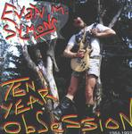

| Artist: | Evan M. Symons |
| Title: | Ten Year Obsession |
| Label: | Step And A Half Multimedia |
| Length(s): | 50 minutes |
| Year(s) of release: | 2000 |
| Month of review: | [09/2001] |
| 1) | Beware The Future | 4.03 |
| 2) | Killex | 1.49 |
| 3) | Who Cares? | 1.30 |
| 4) | What's My Problem? | 2.08 |
| 5) | The Last Air Mask | 2.40 |
| 6) | Ties | 3.34 |
| 7) | Turn Your Motor Down | 3.37 |
| 8) | Infinity/uninfinity | 4.11 |
| 9) | Delay A Pitch Shift | 3.19 |
| 10) | A Detah Song | 4.32 |
| 11) | A Friend I Know | 2.46 |
| 12) | San Francisco Fog | 2.01 |
| 13) | Excess Dominates My Life |
Things turn more proggy with the KC neuroticism of Infinity/Uninfinity (read discipline instead of infinity). The album continues with the percussive violence of Delay A Pitch Shift. The music can be compared with Rick Ray here, a bit like underground psyche. Quite drive and experimental.
A Death Song is more in the Zappa style, meandering guitar rock with experimental blues influences, while A Friend I Know is percussive rock 'n' roll. San Francisco Fog is more melodic, a vague track with lots of keyboards, but also sounding a bit abstracted.
Excess Dominates My Life brings us something jazzy, Cool Bass Line means a return to before track 8. What Society is quite nice with lots of guitar, lots of pace. Whale Song is a noisy track while Swear Song For Kids is an aggressive sounding closer.